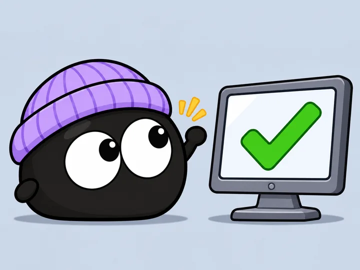
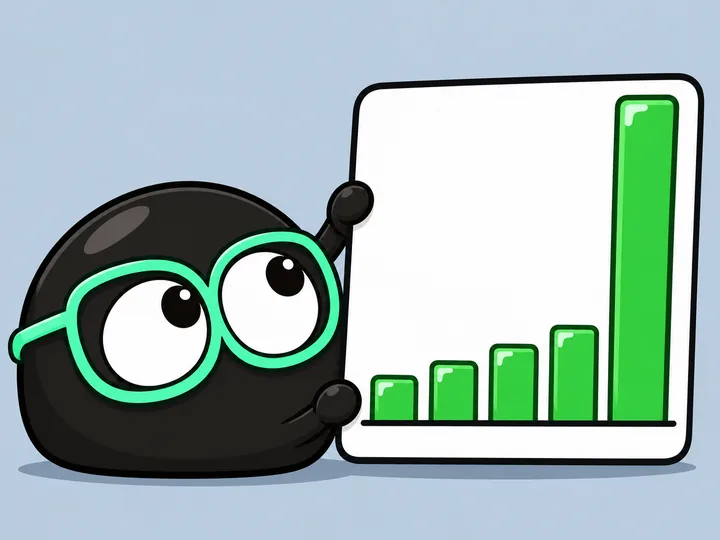

第一次一起把登录页的 bug 修好了。
你交给 AI 的工作散落在一个个对话窗口里。往下滚，窗口逐个关上，每关一个，就有一只团子落进你的小办公室：研究员、程序员、数据分析师、文案、产品经理、助理，还有隐藏款医生。最后是一间完整的小办公室，显示今天一起完成了 7 件事，大约相当于 46 小时的劳动，还有 1 件等你批准。
DANGO 是住在你 Mac 上的小办公室。写代码、查资料、做图表，你交给 AI 的工作，都有忙碌的团子来呈现。谁在干活、做了什么、完成了多少，抬眼就能看见。
支持 Claude Code、Codex、DeepSeek、WorkBuddy · macOS 13 起
写代码的归程序员，查资料的归研究员，做图表的归数据分析师。每件事做了多久、做成了什么，都记在对应的团子身上。
这是 dango 在 Mac 上的样子：菜单栏里一个团子图标，点开就是你的小办公室。屏幕角落还有一个小组件，不打开也看得到。
产品界面以实际版本为准 · 图中数字为示例
窗口关上了，事情没有消失。一张周报记下的，既有团子的忙碌，也有你们一起工作的故事。
token 用了多少，就扣多少钱。
同样的活，请人来做要付的工钱。
每花 1 美元模型钱，换回的活值多少。
示例数据 · 工钱按职业用时 × 美国劳工统计局（BLS）中位时薪估算，不是实际收入 · 只读用时和岗位，不读对话内容

第一次一起把登录页的 bug 修好了。
它帮我翻了 12 个定价案例，结论在第三页。
需求拆成了三件事，第一件明天开工。

注册量的图画好了，周四那根柱子最高。
第八版文案定稿了。最后用的，是第一版。
随手问了句猫为什么拉肚子，隐藏款医生来了。
DANGO 不让你答题。它每周看一眼你和团子的工作记录：放手多少、开荒还是修缮、专精还是跨界、白天还是夜里，然后告诉你，你是哪一种老板。
什么活都接，天黑以后最能打
白天开会，晚上开工，团子没见过你的早上。
全部从工作记录里自动算：放权看 AI 连续自己干活的回合占比，开荒看新文件里写的代码占比，跨界看占一成以上的岗位有几个，夜猫看晚 8 点到早 8 点的工作时长占比。只看数字，不看内容。
它只看一眼你在聊哪一行，认出这单活该归哪个岗位，然后就忘掉。
让 AI 为你做的事，有身影、有记录，也有故事。
下载 dmg，把 Dango 拖进「应用程序」再打开。还没做公证，第一次打开要去「系统设置 → 隐私与安全性」点「仍要打开」。
运行安装程序，只装给你自己，不用管理员权限。还没签名，SmartScreen 拦的时候点「更多信息 → 仍要运行」。
下载 Mac 版 下载 Windows 版把这段话发给 Claude Code、Codex 或别的 AI 编程助手，它会替你装好。
帮我在这台电脑上安装 DANGO（https://github.com/justinz183/dango）。 macOS 在终端里运行：curl -fsSL https://dangoai.org/install.sh | sh Windows 在 PowerShell 里运行：irm https://dangoai.org/install.ps1 | iex 脚本会从 GitHub 下载最新版本，校验 SHA-256，然后打开 App。 装好以后告诉我 Dango 装在哪里、有没有在运行。
打开「终端」，粘贴这一行：
打开 PowerShell，粘贴这一行：
curl -fsSL https://dangoai.org/install.sh | sh
irm https://dangoai.org/install.ps1 | iex
会校验 SHA-256，装好自动打开；再运行一次就是更新。
安装包都在 GitHub 上：github.com/justinz183/dango
免费 · macOS 13 起 · Windows 10 起（预览版）· 支持 Claude Code、Codex、DeepSeek、WorkBuddy
免费。
不会。全部在你的 Mac 上计算，只记时长、岗位这些数字，不读代码和 prompt，报告里也不含项目名。
先按工作内容把每段时间归到一个岗位，再乘以美国劳工统计局（BLS）公布的这个职业的中位时薪。这是估算，不是实际收入。